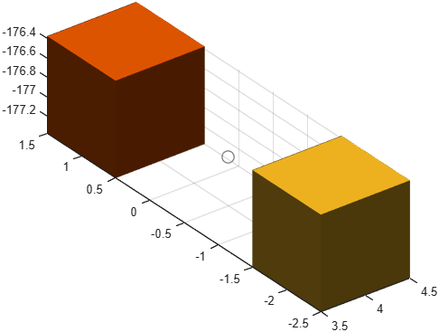

Spherical joint (ball joint, 3 DOF)
Class phx.SphericalJoint | Superclass: phx.base.Joint
phx.SphericalJoint realizes a kinematic constraint with three
degrees of freedom: free rotation about the X, Y and Z axes (a ball joint). The two bodies are
pinned together at the given connection points but may rotate freely relative to one another.
The rotation can be bounded with hard end stops: a cone, possibly elliptic, bounds how far the
joint may swing off its axis (ConeAngle), and a range bounds the
twist about that axis (TwistLimits) — a shoulder, a hip, a
tow hitch. With the twist locked the joint is a constant-velocity joint.
joint = phx.SphericalJoint(bodyA,bodyB) creates a joint between two
bodies attached at their origins. Use PointA and
PointB to set custom connection points.
| Argument | Type | Description |
|---|---|---|
| bodyA, bodyB | phx.Body (scalar) | The two bodies connected by the joint. |
| Property | Type / Default | Description |
|---|---|---|
| PointA | [0 0 0] | Connection point in the local space of body A. |
| PointB | [0 0 0] | Connection point in the local space of body B. |
| ConeAngle | [pi pi] | Largest swing [angleX angleY], rad, hard stops: the half-angles of a cone about the Z axis of joint frame A, within [0, π]. A scalar makes the cone circular, 0 locks the swing in that direction, π leaves it free. See Limits. |
| TwistLimits | [-Inf Inf] | Range of the twist about the Z axis [lower upper], rad, hard stops, as Limits of phx.RevoluteJoint: both within (−π, π), equal values (or a scalar) to lock the twist, or [-Inf Inf] for no stop. |
| Overlay | false | Draw the joint as an overlay (always on top). |
Reaction feedback (ForceA, TorqueA,
ForceB, TorqueB) and the
MutualCollisions switch (collisions between the connected bodies,
default false) are inherited from
phx.base.Joint.
The joint coordinates Angle and
Distance are inherited from there too — the rotation
about the joint axis and the offset along it, both measured from the first joint frame to
the second. This joint leaves all three rotations free, so Angle reports only the turn about the joint axis and ignores the tilt off it.
Without limits the joint constrains the two connection points only, so it reads no orientation at
all: the inherited AxisA/AxisB and the
rotation part of the joint frames (EulerAngles*,
AxisAngle*) have no effect then. With limits they matter: the
Z axis of joint frame A is the axis of the cone and of the twist, its X and Y axes the axes of the
two half-angles, and the X axes of the two frames give the zero of the twist.
ConeAngle bounds the swing: the Z axis of joint frame B may turn
by at most angleX about the X axis and angleY about the Y axis of joint frame A, and
in between by the ellipse through those two. A circular cone (a scalar) is exact; an elliptic one is
exact on its axes and close to an elliptic cone between them. Any half-angle above about
179.5° bounds nothing, and π, the default, leaves the swing free.
TwistLimits bounds the rotation about the Z axis as
Limits of a revolute joint does. The twist is measured after the
swing, so at zero swing it is the Angle of the joint. Near a swing of
π the twist is undefined, so bound it only with a cone well inside that. The stops do not bounce,
their reaction is part of the reaction feedback, and both properties can be changed at any time, also
while the simulation runs or from Simulink. Values out of range are an error
(phx:Joint:invalidLimits).
TwistLimits = 0 with a
free cone makes a homokinetic joint: body B turns about its Z axis by exactly the angle body A turns
about its own, whatever the angle between the two axes — unlike a Cardan joint, whose output
speed varies over every turn.
clf; view(3); axis equal; grid on; camlight headlight; B = phx.Body("Position", [4 1 0]); C = phx.Body("Position", [4 -2 0]); phx.SphericalJoint(B, C, "PointA", [0 -1.5 0], "PointB", [0 1.5 0], "Color", 0.5); sim = phx.Simulation; sim.step(6, 600, 1); delete(sim);

clf; view(3); axis equal; grid on; camlight headlight; base = phx.Body("Type", "static"); arm = phx.Body("Position", [1 0 0], "Shape", {"Box", "Size", [2 0.2 0.2]}); % The cone axis (Z of frame A) along the arm, frame A's X axis up TA = [0 0 1 0; 0 -1 0 0; 1 0 0 0; 0 0 0 1]; TB = TA; TB(1:3, 4) = [-1 0 0]; phx.SphericalJoint(base, arm, "TransformA", TA, "TransformB", TB, "ConeAngle", [0.6 0.3]); sim = phx.Simulation; sim.step(3, 600, 5); % the arm drops 0.3 rad (about Y of frame A) and stays delete(sim);